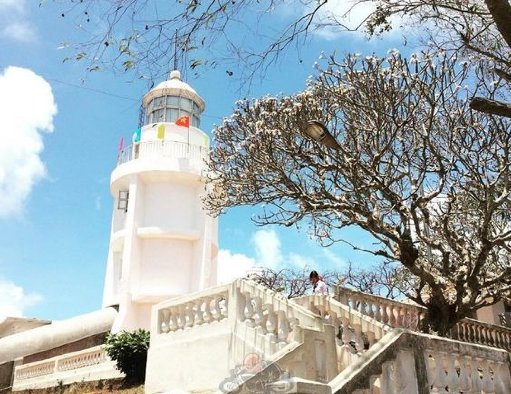
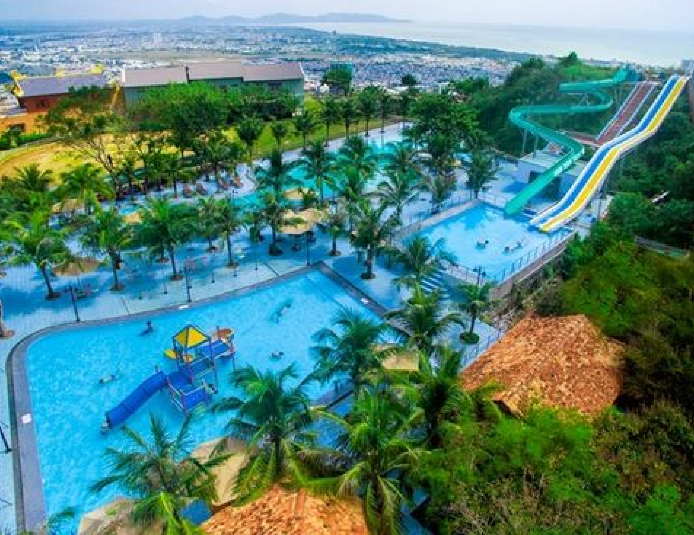
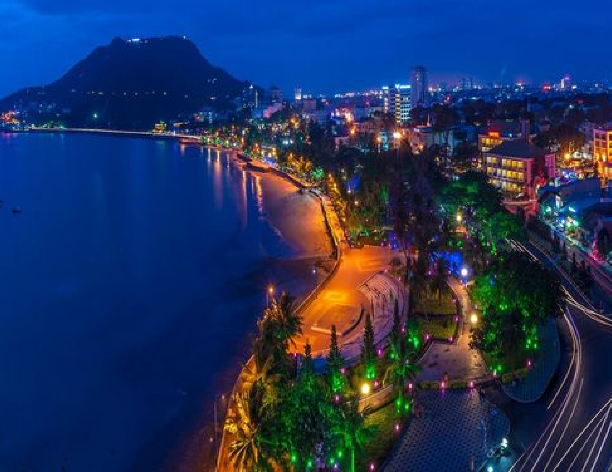
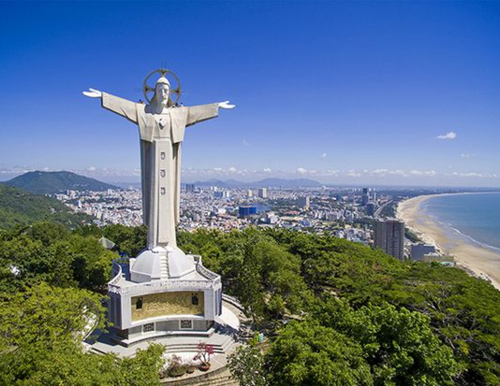

VUNG TAU
HA NOI
Vung Tau, a coastal city in southern Vietnam, is known for its stunning beaches, vibrant atmosphere, and scenic views. Located just a few hours from Ho Chi Minh City, Vung Tau offers a perfect getaway with its golden sands, clear waters, and a variety of recreational activities. Visitors can enjoy relaxing on popular beaches like Bai Sau, explore the iconic Christ the King statue, and savor fresh seafood at local markets. With its blend of natural beauty and urban charm, Vung Tau is a favorite destination for both locals and tourists seeking a coastal retreat.
UNMISSABLE ATTRACTIONS

Vung Tau Lighthouse
The Vung Tau Lighthouse, perched on a hill overlooking the city, is a historic maritime landmark
with stunning views. Built in 1862 by the French, it reflects the city's colonial past and
significance as a key port. Visitors can climb to the top for panoramic views of the coastline and
South China Sea, surrounded by lush greenery.
Adress:
Vung Tau City, Ba Ria-Vung Tau Province, Vietnam.
Ho May Park
Ho May Park in Vung Tau is a hilltop recreational destination with stunning views and diverse
activities. It features a scenic cable car, lush gardens, an amusement park, and cultural exhibits.
Visitors can enjoy panoramic views of the city and coastline, making it a refreshing escape for
families and tourists.
Adress:
1A Ho May Park, Vung Tau City, Vietnam.


Bai Sau and Bai Truoc
Bai Sau and Bai Truoc are Vung Tau's popular beaches, each with unique charm. Bai Sau offers a
lively atmosphere with a sandy beach, ideal for swimming and relaxation, while Bai Truoc is known
for its tranquil setting and scenic views, perfect for sunset watching. Both highlight Vung Tau's
coastal beauty.
Adress:
Vung Tau City, Vietnam.
Christ the King Statue
The Christ the King Statue in Vung Tau, on Mount Nho, is a 32-meter-tall landmark overlooking the
city and sea. With an 18.4-meter arm span, it is one of Asia's largest Christ statues, offering
panoramic views of Vung Tau and the coastline. Visitors can climb to the observation platform for
breathtaking vistas and to admire the statue up close.
Adress:
Mount Nho, Vung Tau City, Ba Ria-Vung Tau Province, Vietnam.

HIDDEN GEMS OF HANOI

VUNG TAU - VUNG TAU CITY
2 days
Availability : Every day
1 people